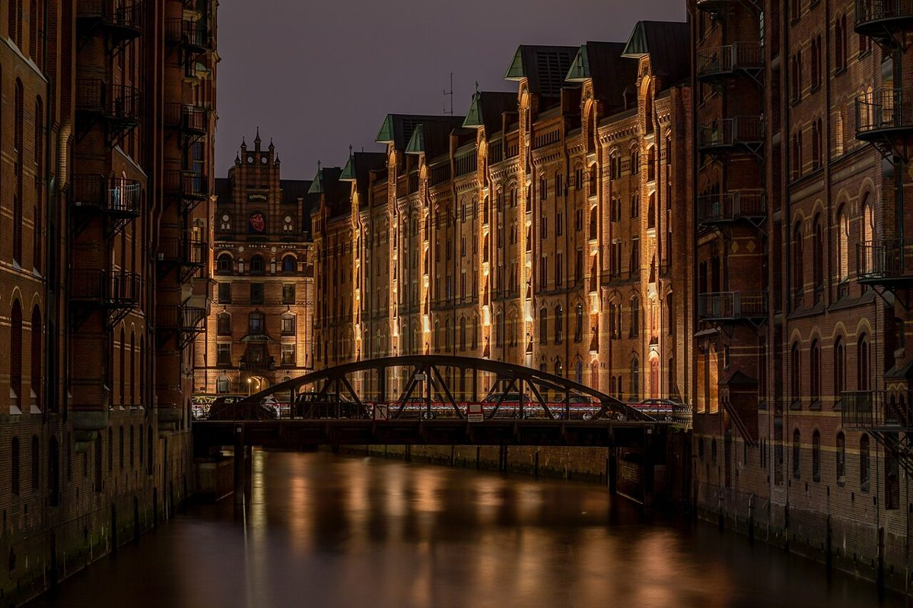

Guía esencial para visitar la Speicherstadt de Hamburgo

La Speicherstadt, un rincón de cuento en Hamburgo
La Speicherstadt, o 'Ciudad de los Almacenes', es el distrito de almacenes portuarios más grande del mundo y uno de los lugares más emblemáticos de Hamburgo. Con sus característicos edificios de ladrillo rojo, canales y puentes, este barrio declarado Patrimonio de la Humanidad por la UNESCO parece sacado de un cuento.
Cómo llegar
La Speicherstadt está situada en el centro de Hamburgo, junto al puerto y muy cerca del famoso barrio de HafenCity. Puedes llegar fácilmente en transporte público: las líneas de metro U1 (parada Meßberg) y U3 (parada Baumwall) te dejan a pocos minutos a pie. También es accesible en autobús o, si prefieres algo más pintoresco, en barco por los canales.
Mejor época para visitar
Cualquier momento es bueno para visitar la Speicherstadt, pero su magia se intensifica al atardecer, cuando las luces se reflejan en los canales. En invierno, el Mercado de Navidad que se instala aquí es uno de los más bonitos de Alemania. En verano, los paseos al aire libre son ideales, aunque puede haber más turistas.
No te pierdas...
1. Miniatur Wunderland
El museo de maquetas más grande del mundo es una parada imprescindible. Sus increíbles detalles y movimiento te sorprenderán.
2. El Museo Marítimo Internacional
Ubicado en un antiguo almacén, ofrece fascinantes exposiciones sobre la historia portuaria de Hamburgo.
3. Un paseo nocturno por los puentes
Cruza el emblemático Puente de Brook para disfrutar de las mejores vistas de los canales iluminados.
4. El Café Schopensthl
Un encantador café con vistas a los canales donde probar auténticas especialidades hanseáticas.
Dónde comer
Para una experiencia típica, visita alguno de los restaurantes junto al agua que sirven pescado fresco del Mar del Norte. El Labskaus (un plato marinero tradicional) y las sopas de pescado son excelentes opciones. Si buscas algo rápido, los puestos de fischbrötchen (bocadillos de pescado) son deliciosos y muy populares.
Con su mezcla única de historia, arquitectura y ambiente portuario, la Speicherstadt es una visita obligada en Hamburgo. Tómate tu tiempo para pasear sin prisas, dejarte llevar por su atmósfera única y descubrir por qué este barrio sigue cautivando a millones de visitantes cada año.
Haiktec
- El Arte de Vender en Etsy: 7 Estrategias Comprobadas para Incrementar tus Ventas Como Hombre
- Planificador de Viajes para NRW: Presupuesto y Ruta de Explora
- Baviera y los Alpes: Descubre los Mejores Recorridos para Viajeros Masculinos
Text mit KI erstellt und automatisch geprueft.